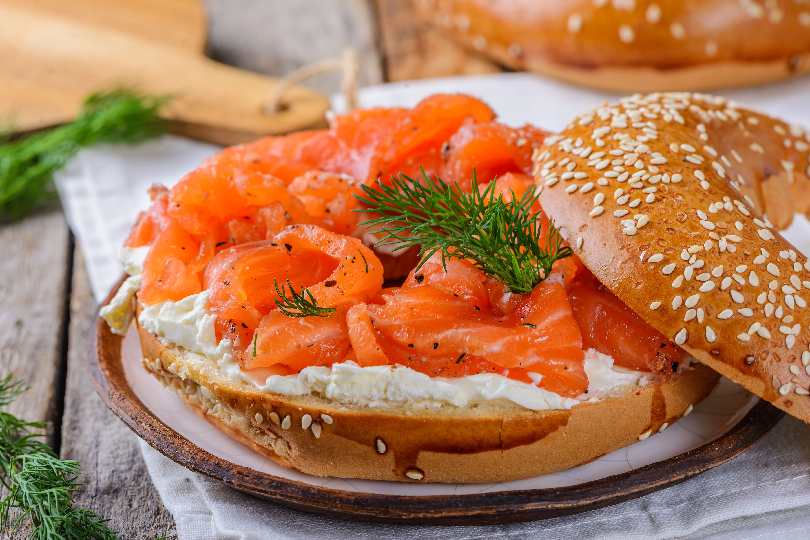

← Back to
home
Gravlax Cured Salmon

Description
The word's origins date back to a time when Swedish fisherman would salt their catch and bury it near the shore to
ferment it. It combines the terms "grav," which refers to a grave or hole in the ground in Scandinavian languages,
and "lax," meaning salmon (via Food
Republic).
Ingridients
- 500g fresh salmon skillet: skin on
- 2 tbsp crushed black pepper
- 1 large bunch of fresh dill
- 1/4 cup of sugar
- 1/4 cup of salt
Steps
- In a small bowl, combine the salt, sugar, and crushed black pepper.
- Spread half of the dill on a large piece of plastic wrap. Place the salmon fillet skin-side down on the dill,
and then cover the fillet with the salt mixture.
- Top the salmon with the remaining dill and wrap the plastic wrap tightly around the fillet.
- Place the wrapped salmon on a tray or dish and refrigerate for 48-72 hours, turning the fillet every 12 hours to
ensure even curing.
- After curing, remove the salmon from the plastic wrap and gently scrape off the dill and curing mixture.
- Thinly slice the gravlax and serve on rye bread or crispbread with dollop of mustard sauce.